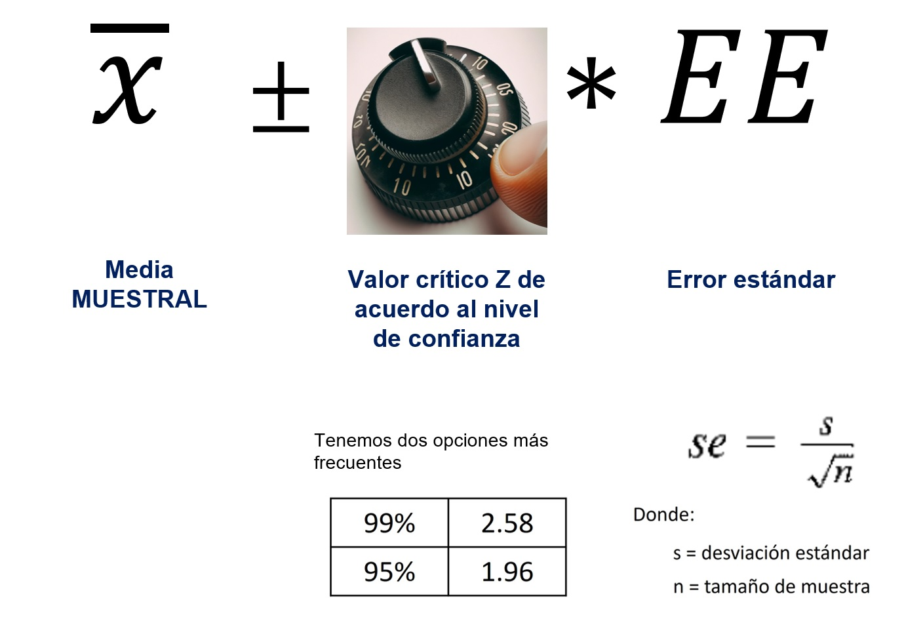

Para el final de la sesión, el alumno comprenderá los fundamentos de la estadística inferencial. Asimismo, podrá calcular los intervalos de confianza de una media poblacional a partir del análisis de una muestra.
4.2 Presentación
4.3 Problema
En esta sección, abordaremos un problema que nos permitirá explorar y comprender más a fondo los principios de la estadística inferencial. Te pido que te enfoques en mantener la esencia de esta idea a lo largo del análisis, más allá del código específico que utilizaremos.
4.3.1 Población y muestra
Dada una población de 3000 individuos, el objetivo de este estudio es determinar la media de ingresos de toda la población. Debido a limitaciones de recursos, no es factible recopilar datos de todos los individuos directamente. En consecuencia, se procederá a realizar un análisis basado en una muestra representativa, con el fin de estimar la media poblacional de ingresos.
Importante
En este punto del curso es clave que hagamos la diferencia entre población (todas las unidades de estudio que deseo estudiar y no puedo alcanzar por diversos motivos) y muestra (pequeña porción representativa de esa población).
Este conjunto de datos representa nuestra población completa (denominado poblacion). Dado que no es viable calcular directamente la media de toda la población, nuestra metodología consistirá en extraer muestras. Para iniciar, procederemos con un estudio piloto extrayendo una muestra de tamaño 20.
Tenemos la población y tenemos la muestra. ¿Qué sigue?
4.3.2 Media muestral
Una vez obtenida una muestra representativa, y con el objetivo de estimar la media de ingresos de la población total, procederemos a calcular la media de esta muestra. Este cálculo nos proporcionará una estimación aproximada de la media poblacional.
Ojo, utilizaremos datos de la muestra de 20 casos, centrados exclusivamente en la característica de ingresos.
mean(muestra1$ingresos)
[1] 1546.967
A partir de los datos recopilados, hemos calculado que la media de ingresos de nuestra muestra es de 1495. Esto nos permite inferir que la media de ingresos de la población total podría aproximarse a este valor.
Importante
Cuando utilizamos la media de una muestra como aproximación de la media poblacional, a este proceso se le denomina estimación puntual.
4.3.3 Un patrón interesante
Imagina que el ejercicio de extraer varias muestras y calcular sus medias se repitiera numerosas veces.
Después, en cada repetición, almacenáramos las medias obtenidas en una tabla.
¿Qué ocurriría si replicáramos este proceso en un universo paralelo? Procedamos a simular de nuevo la extracción de una muestra y el cálculo de la media muestral.
¿Qué conclusiones podemos extraer de esta nueva repetición?
Utiliza el siguiente código para replicar varias veces la extracción de una muestra de 20 personas y calcular la media de ingresos.
Importante
En este punto damos cuenta que si repetimos el proceso tendremos distintas medias muestrales. Por lo que contar con estimadores puntuales puede resultar poco consistente.
4.4 Fundamentos
4.4.1 Términos básicos
La estadística inferencial utiliza la muestra de datos para hacer estimaciones y tomar decisiones acerca de las características de una población. Esto implica la utilización de técnicas y métodos para inferir información sobre la población a partir de la información recopilada en la muestra.
Algunas definiciones básicas:
Definición
Descripción
Población
Se refiere al conjunto total de individuos, objetos, eventos, medidas o cualquier otra cosa que se quiera estudiar. En estadística inferencial, la población se utiliza como el objeto de estudio, y se busca inferir información sobre ella a partir de la muestra.
Muestra
Es un subconjunto de la población que se utiliza para hacer inferencias sobre la población en su conjunto. La selección de la muestra debe hacerse de tal forma que represente de manera adecuada las características de la población.
Estadístico
Es una medida numérica que se utiliza para resumir o describir alguna característica de la muestra. Los estadísticos se calculan a partir de los datos de la muestra y se utilizan para hacer inferencias sobre los parámetros de la población.
Parámetro
Es una medida numérica que describe alguna característica de la población. En estadística inferencial, el objetivo es hacer inferencias sobre los parámetros de la población a partir de los datos de la muestra.
4.4.2 Distribución normal
Anteriormente te comenté que la curva normal (forma de campana) ejercía un rol fundamental en el contexto de la estadística inferencial. Esto es gracias a una propiedades muy interesantes.
La principal: la totalidad de observaciones están distribuidas +- 3 desviaciones estándar (puntuaciones Z) respecto de su media.
Como se ve en la figura, son 4 los principios: 1) 50% de las puntuaciones caen encima de la media y 50% debajo; 2) Prácticamente todas las puntuaciones caen dentro de 3 SD a partir de la media en ambas direcciones (en realidad el 99.7%); 3) Cerca del 95% de las puntuaciones de una variable normalmente distribuida caen dentro de una distancia de +- 2 SD respecto de la media; y 4) Alrededor del 68% de las puntuaciones caen dentro de una distancia de +-1 SD respecto de la media.
4.4.3 Teorema del límite central
El teorema del límite central (TLC) es uno de los conceptos más importantes de la estadística y es fundamental en el muestreo y la inferencia estadística.
En términos simples, el teorema del límite central dice que si tomamos suficientes muestras aleatorias grandes de una población, la distribución de las medias de esas muestras será una distribución normal, sin importar cómo se vea la distribución original de la población.
Esto es importante en el muestreo porque nos permite hacer inferencias precisas sobre una población, incluso si no conocemos su distribución. Si podemos asumir que la distribución de la población es aproximadamente normal, entonces podemos usar la distribución normal de las medias de las muestras para hacer predicciones y estimaciones precisas sobre la población.
Además, el TLC nos permite calcular intervalos de confianza y realizar pruebas de hipótesis (siguiente secciòn) con mayor precisión, lo que nos permite tomar decisiones más informadas basadas en los datos muestrales. En resumen, el teorema del límite central es una herramienta clave en la inferencia estadística y nos permite hacer generalizaciones precisas sobre una población a partir de datos muestrales.
Máquina de Galton
El Tablero de Galton ilustra cómo la distribución de frecuencias de los resultados de muchos eventos aleatorios independientes se acerca a una distribución normal, independientemente de la forma de la distribución original, siempre que el número de eventos sea lo suficientemente grande.
4.4.4 Ley de los grandes números
La ley de los grandes números es un teorema en estadística que establece que, a medida que el tamaño de una muestra aumenta, la media muestral se acerca a la media poblacional. En otras palabras, cuando se toman muestras cada vez más grandes de una población, se espera que la media de esas muestras se acerque cada vez más a la media real de la población.
Esta ley es importante porque permite a los investigadores obtener estimaciones precisas de los parámetros de una población a partir de una muestra relativamente pequeña. Además, esta ley también es fundamental para la teoría de la probabilidad y es utilizada en muchas áreas de la estadística y de la ciencia en general.
4.4.5 Varias muestras
Cuando extraemos varias muestras de una población y calculamos la media para cada una de esas muestras, obtenemos una variedad de medias muestrales. Aunque cada muestra es única y puede tener su propia media, si repitiéramos este proceso de muestreo muchas veces, observaríamos que la distribución de estas medias muestrales tiende a adoptar una forma específica. Esta forma es lo que conocemos como la distribución de muestreo de la media.
El Teorema del Límite Central, uno de los pilares fundamentales de la estadística inferencial, nos dice que, independientemente de la forma de la distribución original de la población, la distribución de las medias muestrales se aproximará a una distribución normal (o gaussiana) a medida que el tamaño de la muestra aumenta. Esta distribución normal centrada en la media verdadera de la población y con una desviación estándar llamada error estándar nos permite hacer inferencias sobre la media poblacional a partir de las medias de nuestras muestras, especialmente cuando el tamaño de la muestra es grande.
4.4.6 Error estándar
El error estándar es una medida que nos indica cuánto esperamos que varíe una estadística (como la media o la proporción) de una muestra a otra, si tomáramos múltiples muestras de la misma población. En otras palabras, es una forma de medir la variabilidad que se espera en nuestras estimaciones debido al hecho de que estamos trabajando con muestras y no con la totalidad de la población.
Podríamos pensar en el error estándar como una herramienta que nos ayuda a entender cuán confiables o precisas son nuestras estimaciones basadas en muestras. Un error estándar pequeño sugiere que nuestras estimaciones son relativamente estables y consistentes de una muestra a otra, mientras que un error estándar grande indica que esas estimaciones podrían variar considerablemente entre diferentes muestras.
Es importante destacar que el error estándar está relacionado con la desviación estándar de la población. Mientras que la desviación estándar nos dice cuánto varían los valores individuales alrededor de la media en una población o muestra, el error estándar nos dice cuánto esperamos que varíen nuestras estadísticas de muestra (como la media muestral) alrededor de la verdadera estadística poblacional.
Recuerdas que habíamos dicho que en la curva normal se podría evidenciar que la totalidad de las observaciones se encontraban entre -3 y +3 desviaciones estándar respecto de la media? En el caso de las distribuciones muestrales, esa desviación estándar es conocida como error estándar.
El error estándar mide la dispersión del error de muestreo que ocurre cuando se muestrea repetidamente una población (como lo hicimos líneas arriba).
\[s_{\hat{x}} = \frac{s}{\sqrt{n}}\]
Entonces los puntos más importantes del EE son:
El error estándar es una medida de cuánto se espera que varíen las medias de las muestras tomadas de una población determinada. A medida que el tamaño de la muestra aumenta, el error estándar tiende a disminuir.
El error estándar es importante en el cálculo de los intervalos de confianza. Cuanto menor sea el error estándar, menor será la variabilidad de las medias muestrales y más preciso será el intervalo de confianza.
El error estándar se calcula dividiendo la desviación estándar de la población entre la raíz cuadrada del tamaño de la muestra. En la mayoría de los casos, la desviación estándar de la población no se conoce y se utiliza la desviación estándar de la muestra para estimar el error estándar.
4.5 Métodos de estimación
4.5.1 Estimación puntual
En estadística inferencial, la estimación puntual se refiere a la técnica de utilizar los datos de una muestra para calcular un único valor, conocido como punto estimado, que es la mejor suposición o predicción del valor de un parámetro desconocido de la población.
Por ejemplo, si queremos conocer el salario promedio de todos los trabajadores de una empresa, podríamos tomar una muestra aleatoria de trabajadores, calcular el salario promedio de esa muestra y usar ese valor como nuestra estimación puntual del salario promedio real de toda la empresa.
Esencialmente, este valor es nuestra mejor suposición basada en la información que hemos recolectado. Sin embargo, aunque la estimación puntual es directa y fácil de entender, no refleja la incertidumbre o variabilidad que podría haber en esa estimación.
Es por esta razón que, en muchas situaciones, se complementa con técnicas como la estimación por intervalo para obtener una visión más completa y matizada del parámetro que estamos tratando de estimar.
4.5.2 Intervalo de confianza de una media
El intervalo de confianza es un rango de valores posibles de un parámetro expresado con un grado específico de confianza.
Si tenemos un nivel de confianza de 95% quiere decir que si realizamos 100 veces el mismo procedimiento de muestreo y calculamos los estadísticos de interés, 95 veces nos van a salir resultados en los intervalos calculados. Si lo realizamos con un 99% de confianza, de igual manera, si realizamos 100 veces el procedimiento, 99 veces nos va a salir resultados en el intervalo resultante. Esto lo tenemos claro gracias a la explicación del rol que cumple la curva normal y sus propiedades.
A MAYOR CONFIANZA MENOR ES LA PRECISIN (LOS INTERVALOS SON MS AMPLIOS)
Para el cálculo de un intervalo de confianza utilizamos la siguiente fórmula. Recuerda

Ese valor que se suma y se resta a la media muestral es el término de error, sin embargo, es más conocido como margen de error.
4.6 Ejercicio 1: ENADES 2022
El Instituto de Estudios Peruanos, por encargo de Oxfam en Perú, elaboró la I Encuesta Nacional de percepción de Desigualdades ENADES 2022. Este estudio pone a disposición del público el análisis estadístico más completo a la fecha sobre la percepción de las diferentes formas de desigualdad en el Perú.
Además de factores económicos, la presente encuesta incluye indicadores que permiten medir la magnitud de una serie de brechas sociales y políticas: desde diferencias de género, clase y relaciones étnico-raciales, hasta dimensiones subjetivas de la desigualdad y sus vínculos con orientaciones políticas. Como se muestra a lo largo del informe, la base de datos de este proyecto provee herramientas valiosas a expertos de diferentes campos, tanto académicos como profesionales, estudiantes y personas interesadas en el análisis multidimensional de la desigualdad en el país.
Puedes abrir el cuestionario de la encuestas aquí.
library(haven)library(tidyverse)enades<-read_spss("data/ENADES_2022.sav") # Con esta función abrimos archivos de SPSS# enades<-read_spss("https://github.com/ChristianChiroqueR/banco_de_datos/raw/main/ENADES_2022.sav")
Recuerda que si en un primer momento te pierdes un poco entre los nombres de las variables, eso quiere decir que tienes que leer el cuestionario y el diccionario de variables!
4.6.2 Identificar una variable numérica
Elijamos la variable P17:
En una escala del 1 al 10, en la que 1 es Totalmente inaceptable y 10 es Totalmente aceptable. ¿Hasta qué punto es aceptable la desigualdad en el Perú? Dígame un número de 1 a 10, recuerde que 1 es Totalmente inaceptable y 10 es Totalmente aceptable (RESPUESTA ESPONTNEA)
La convertimos en numérica.
enades$p17<-as.numeric(enades$p17)
Solicitamos los estadísticos descriptivos para darle una primera mirada.
summary(enades$p17)
Min. 1st Qu. Median Mean 3rd Qu. Max. NA's
1.000 1.000 5.000 4.571 7.000 10.000 23
Podemos graficarlo
enades |>ggplot() +aes(x=p17)+geom_bar()
4.6.3 Cálculo del estimador puntual
Calculamos el estimador puntual, en este caso, la media muestral.
mean(enades$p17, na.rm =TRUE)
[1] 4.571334
Tienes que recordar lo básico de este:
Es solo una aproximación del verdadero valor poblacional, y su precisión puede variar dependiendo del tamaño y calidad de la muestra, entre otros factores.
Es por ello que, a menudo, se complementa con intervalos de confianza para ofrecer un rango de valores en los que es probable que se encuentre el verdadero parámetro poblacional.
4.6.4 Cálculo del IC al 95%
MANUAL
Recordemos qué necesitamos para calcular el intervalo de confianza de una media.
Necesitamos la media muestral (mean) de esa única muestra que obtuvimos de la población, la desviación estándar (sd) y el tamaño de muestra que tenemos (n).
Así también, necesitamos elegir qué nivel de confianza vamos a tomar (recuerdas los intervalos de la distribución normal? y cómo se aplicaría a distribuciones muestrales?), es decir, si vamos al 95% (1.96) o algún otro nivel.
Por lo pronto, hemos obtenido un error estándar con un valor de 0.08009848.
El error estándar, en su esencia, nos brinda una medida de cuánta variabilidad podemos esperar en nuestras estimaciones si repitiéramos el muestreo muchas veces. Cuando interpretamos un error estándar específico, como 0.08009848 podemos considerar lo siguiente:
Un error estándar de 0.08009848 sugiere que, si tomáramos múltiples muestras del mismo tamaño de la población y calculáramos la estadística de interés (por ejemplo, la media) para cada muestra, esperaríamos que la mayoría de esas estadísticas estuvieran dentro de 0.08009848 unidades de la estadística media de todas esas muestras.
En otras palabras, el valor de 0.08009848 nos da una idea de la precisión de nuestra estimación basada en una sola muestra. Una estimación con un error estándar más pequeño generalmente se considera más precisa que una con un error estándar más grande, porque indica menos variabilidad entre las estimaciones de diferentes muestras.
Ahora sí, una vez calculado el error estándar podemos calcular los límite inferior o superior. Recuerda que debemos aplicar la fórmula y que la única diferencia para calcular el límite inferior y superior es el signo:
limite_inferior<- media - (z*error_estandar)limite_superior<- media + (z*error_estandar)
Los presentamos:
limite_inferior
[1] 4.414341
limite_superior
[1] 4.728327
Con ello podemos concluir que: Con un 95% de confianza, podemos afirmar que la media poblacional de la aceptación de la desigualdad en el Perú (que va del 1 al 10) se encuentra entre 4.414341 y 4.728327.
Esto lo podemos interpretar también de las siguientes forma:
Estoy 95% seguro de que el promedio de aceptación de la desigualdad en el país real (es decir el parámetro) se encuentra entre 4.414341 y 4.728327.
Si realizara este estudio 100 veces, 95 veces obtendré un promedio de aceptación de la desigualdad dentro de este intervalo: 4.414341 y 4.728327.
CON LA FUNCIN ciMean()
Una vez que hemos navegado por el proceso de calcular un intervalo de confianza de manera manual, utilizando la fórmula tradicional, es hora de introducir herramientas que simplifiquen y agilicen este proceso en el mundo real del análisis de datos. Para ello, en R, utilizaremos el paquete lsr y, específicamente, la función ciMean. Esta función está diseñada para calcular automáticamente el intervalo de confianza para la media de un conjunto de datos. Al proporcionarle una serie de datos como entrada, ciMean nos devuelve el rango en el que, con un nivel de confianza específico (por defecto, 95%), esperamos que se encuentre la verdadera media poblacional. Es una herramienta poderosa que combina precisión con eficiencia, permitiéndonos centrarnos en la interpretación y aplicación de nuestros resultados.
library(lsr)ciMean(enades$p17, na.rm = T)
2.5% 97.5%
[1,] 4.413023 4.729645
Es el mismo resultado que obtuvimos arriba. Como te puedes dar cuenta, si hemos recorrido este camino (medio tedioso) es para que te quede claro cómo se obtienen esos dos números que llamamos intervalos de confianza y de qué depende en la práctica al utilizar una muestra real.
4.6.5 Barras de error
Tras calcular el intervalo de confianza, una práctica recomendada es visualizarlo gráficamente. El representar este intervalo en un gráfico no solo nos facilita la comprensión de su significado, sino que también nos proporciona una perspectiva visual de dónde se sitúa nuestra estimación y el rango dentro del cual esperamos que se encuentre el verdadero valor poblacional. Al observar el intervalo de confianza en un gráfico, podemos tener una idea más intuitiva y clara de la precisión y confiabilidad de nuestra estimación, así como de la variabilidad asociada a ella.
En el contexto de intervalos de confianza, las barras de error se utilizan para representar el nivel de incertidumbre en una estimación puntual del parámetro poblacional. Un intervalo de confianza es un rango de valores plausible para el valor del parámetro poblacional, y se construye a partir de una muestra aleatoria y un nivel de confianza específico.
Las barras de error en un gráfico de intervalos de confianza se construyen a partir de los límites superior e inferior del intervalo de confianza. Generalmente se dibujan líneas verticales que se extienden desde el valor estimado del parámetro (que puede ser una media, una proporción, una diferencia de medias, etc.) hasta los límites del intervalo de confianza.
Por ejemplo, si se estima la media de una variable a partir de una muestra y se desea construir un intervalo de confianza al 95%, las barras de error se construirán a partir del límite inferior y superior del intervalo de confianza, que contendrán el verdadero valor de la media poblacional con una probabilidad del 95%.
Las barras de error en un gráfico de intervalos de confianza pueden ser útiles para comparar la precisión de las estimaciones entre diferentes grupos o condiciones. Si las barras de error son muy pequeñas, esto sugiere que la estimación es muy precisa y que hay una alta confianza en la validez del intervalo de confianza. Por otro lado, si las barras de error son grandes, esto sugiere que la estimación es menos precisa y que hay una mayor incertidumbre en el intervalo de confianza.
Podemos utilizar ggplot()!
mediaEintervalos<-enades %>%summarise(mean =mean(p17, na.rm =TRUE), #Utilizamos summarise y pedimos la media,ci_lower =ciMean(p17, na.rm = T)[1], # También el PRIMER ELEMENTO de la función ciMeanci_upper =ciMean(p17, na.rm = T)[2]) #Y el SEGUNDO ELEMENTO de la función ciMeanmediaEintervalos
# A tibble: 1 3
mean ci_lower ci_upper
<dbl> <dbl> <dbl>
1 4.57 4.41 4.73
mediaEintervalos %>%ggplot() +aes(x ="Media", y = mean)+geom_point(size =3) +geom_errorbar(aes(ymin = ci_lower, ymax = ci_upper), width =0.2) +labs(title ="Media de aceptación de la desigualdad en el Perú (IC al 95%)", y ="Valor", x ="")
Puedes incluir más detalle y detallar los límites inferior y superior:
mediaEintervalos %>%ggplot() +aes(x ="Media", y = mean) +geom_point(size =3) +geom_errorbar(aes(ymin = ci_lower, ymax = ci_upper), width =0.2) +geom_text(aes(label =round(ci_lower, 3), y = ci_lower), vjust =1.5, hjust =-0.5) +# Etiqueta para el límite inferiorgeom_text(aes(label =round(ci_upper, 3), y = ci_upper), vjust =-0.5, hjust =-0.5)+# Etiqueta para el límite superiorlabs(title ="Media de aceptación de la desigualdad en el Perú (IC al 95%)", y ="Valor", x ="")